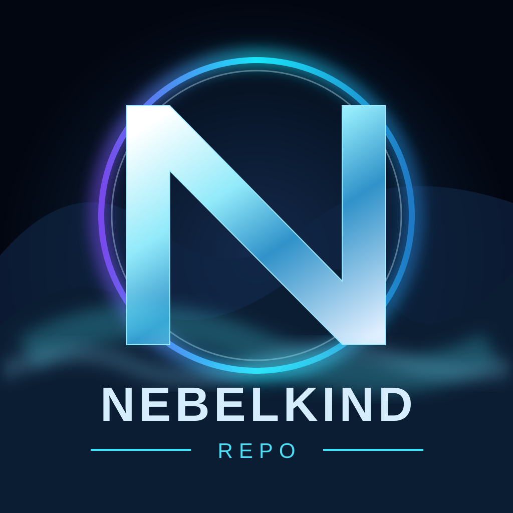

OBERFLÄCHE
NebelFlix Skin
Dein Kino-Erlebnis mit Widgets, Filmen, Serien, Live-TV und eigener Navigation.

NEBELKIND REPOGitHub-ProjektDein direkter Zugang zum NebelFlix-Skin und den zugehörigen Addons. Eine Repo, ein Installer – alle Versionen direkt aus GitHub.
Dein Kino-Erlebnis mit Widgets, Filmen, Serien, Live-TV und eigener Navigation.
Suche, Stream-Auswahl, Weiterschauen und interne Serienfortsetzung.
Sendergruppen, Programmführer und zuletzt gesehene Sender.
Musikübersicht und die Kategorien deines eigenständigen Nebelkind-Musikaddons.
Test-Updates: Auch Teststände werden hier veröffentlicht. Bei unveränderter Versionsnummer musst du die ZIP auf bestehenden Geräten manuell installieren. Für automatische Kodi-Updates wird die Versionsnummer erhöht.
Bestimmte Addons benötigen zusätzliche Abhängigkeiten, die nicht Bestandteil dieser Repo sind (z. B. Vavoo TV Plus).